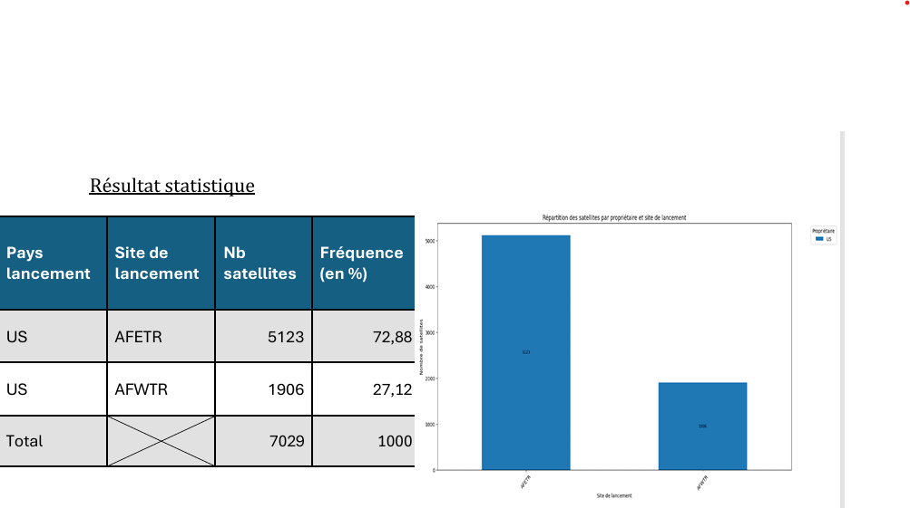
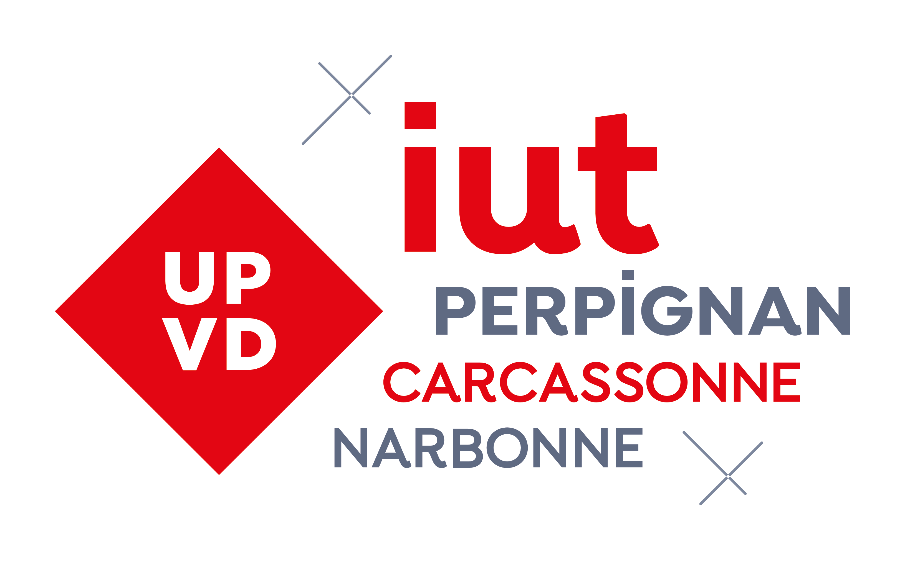

Vue d'ensemble du projet
Objectif du projet
L'objectif de cette SAE était de concevoir une chaîne complète d'acquisition de données environnementales — température, humidité, pression atmosphérique et luminosité — capable de mesurer, transmettre et archiver ces informations sans intervention humaine directe.
Contrainte du cahier des charges : la carte Arduino ne devait pas se connecter directement en Wi-Fi, mais transmettre ses données via une liaison Bluetooth vers une passerelle mobile Android, qui relaie ensuite les mesures vers le cloud.

Matériel & programme Arduino
La partie embarquée s'articule autour d'un microcontrôleur Arduino relié à trois capteurs : un DHT22 pour l'humidité, un DPS310 pour la pression atmosphérique et la température, et un TSL2561 pour la luminosité. Un module HC-05 configuré en esclave assure la liaison Bluetooth vers le smartphone.
| Composant | Interface | Broches |
|---|---|---|
| HC-05 | SoftwareSerial | RX = D11 / TX = D10 |
| DHT22 | Digital (OneWire) | D2 |
| DPS310 | I2C | SDA (A4) / SCL (A5) |
| TSL2561 | I2C | SDA (A4) / SCL (A5) |
Toutes les 30 secondes, le programme lit les capteurs et concatène les valeurs en une trame CSV (séparateur point-virgule), envoyée simultanément sur le port série USB (débogage) et sur le port Bluetooth (application mobile) :
20.24;38.10;100503.65;323.00

Application mobile — MIT App Inventor
Une application Android développée avec MIT App Inventor agit comme pont entre l'Arduino et le cloud. Un composant Horloge interroge périodiquement la liaison Bluetooth ; dès que des données sont disponibles, elles sont lues puis découpées (« parsing ») à l'aide d'un séparateur pour isoler température, humidité, pression et luminosité.
L'application construit ensuite dynamiquement deux requêtes HTTP GET pour envoyer chaque mesure vers deux destinations en parallèle : notre API PHP et un Google Form détourné en API d'insertion vers Google Sheets. Un navigateur intégré (WebViewer) permet également de consulter l'historique des mesures sans quitter l'application.

Stockage & visualisation web
Le serveur (hébergement AwardSpace, Apache + PHP + MySQL) repose sur un modèle relationnel
à deux tables : appareil (référentiel des modules Bluetooth autorisés) et
mesure (historique des relevés), reliées par une clé étrangère sur l'adresse MAC.
Le script reciever.php agit comme API d'insertion — connexion sécurisée via
PDO et requêtes préparées pour prévenir les injections SQL — tandis que
index.php affiche l'historique des mesures, trié par date décroissante,
sur saeiotabouhenoc.atwebpages.com.
En parallèle, une feuille Google Sheets reçoit les mêmes données, assurant une redondance
de sauvegarde indépendante de notre infrastructure.
Conclusion
Ce projet nous a permis de mettre en œuvre une chaîne IoT complète, de l'électronique embarquée (câblage, C++ Arduino) jusqu'au développement web Full Stack (PHP/MySQL), en passant par la programmation par blocs d'une application mobile. Il illustre notre capacité à faire communiquer des systèmes hétérogènes — capteurs, Bluetooth, HTTP, base de données relationnelle — au sein d'une seule chaîne de traitement fiable.